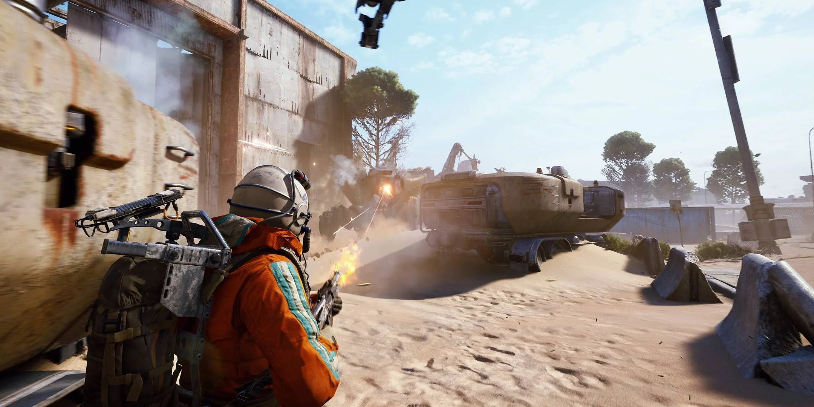

GeForce Now haftanın oyunları açıklandı
GeForce Now güçlü bir bilgisayara sahip olmasanız bile yalnızca sağlam bir internet bağlantısıyla en yeni oyunları oynamanıza olanak tanıyor. Bulut tabanlı oyun servisi her hafta düzenli olarak oyun kütüphanesini genişletmeyi sürdürüyor. Peki bu hafta GeForce Now’a hangi yeni oyunlar eklendi? İşte ayrıntılar!
GeForce Now haftanın oyunları – 30 Ekim
Nvidia’nın paylaştığı bilgilere göre bu hafta GeForce Now kütüphanesine 10 oyun eklendi. Bu oyunların arasında özellikle Escape Simulator 2 ve ARC Raiders dikkat çekiyor. Aboneler artık listede yer alan tüm oyunları güçlü bir bilgisayar gerektirmeden yalnızca iyi bir internet bağlantısıyla oynayabilecek.
- Escape Simulator 2 (Yeni çıkış Steam’de, 27 Ekim)
- Wreckreation (Yeni çıkış Steam’de, 28 Ekim)
- Outbreak Island (Yeni çıkış Steam’de, 28 Ekim)
- Dark Moon (Yeni çıkış Steam’de, 29 Ekim)
- Earth vs. Mars (Yeni çıkış Steam’de, 29 Ekim)
- The Outer Worlds 2 (Yeni çıkış Steam, Battle.net ve Xbox’ta, PC Game Pass’te mevcut, 29 Ekim, GeForce RTX 5080 için hazır)
- ARC Raiders (Yeni çıkış Steam’de, 30 Ekim, GeForce RTX 5080 için hazır)
- Ghost Trick: Phantom Detective – Demo (Steam)
- Ghost Trick: Phantom Detective (Steam)
- Keeper (Steam ve Xbox’ta, PC Game Pass’te mevcut)